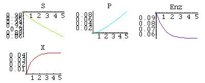
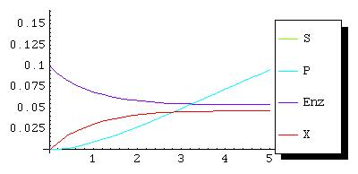

The Model Builder maintains an internal database consisting of a single model that can be manipulated by the user.
The functions add_, remove_, and modify_ where "_" can be replaced by any of the following Compartment, Event, Function, Parameter, Reaction, Rule, Species, Unit allow one to add, remove, or modify contents of the database.
The add_ and remove_ functions are new in MathSBML version 2.1.5.
The modify_ functions are developmental and have not yet been released.
In the following table, options is an option list; id is a valid id for the given SBML field (metaid for rules); and SSBML is a symbolic SBML version of the entity (i.e., XMLElement["entity name",...])
|
|
|
Both the input needed to build a simple model with a single enzymatic reaction, as well as the output produced by Mathematica, are shown in the following dialog.
Input: newModel["EnzymaticReaction"]; Input: addSpecies[S, compartment -> "Cell", initialConcentration -> 1]; Output: Compartment Cell added. Species S added to compartment Cell Input: addSpecies[P, compartment -> "Cell", initialConcentration -> 0]; Output: Species P added to compartment Cell Input: addSpecies[Enz, compartment -> "Cell", initialConcentration -> .1]; Output: Species Enz added to compartment Cell Input: addSpecies[X, compartment -> "Cell", initialConcentration -> 0]; Output: Species X added to compartment Cell Input: addReaction[S + Enz -> X, id -> r1, kineticLaw -> k1*S*Enz, parameters -> { k1 -> 0.5}]; Output: Reaction r1 added. Input: addReaction[X -> S + Enz, id -> r2, kineticLaw -> k2*X, parameters -> {k2 -> 0.01}]; Output: Reaction r2 added. Input: addReaction[X -> P + Enz, id -> r3, kineticLaw -> k3*X, parameters -> {k3 -> 0.5}]; Output: Reaction r3 added. Input: createModel[]; Output: <?xml version="1.0" encoding="UTF-8"?> <!-- Generated 23-September-2003 10:28:11.369320 --> <!-- Generated by MathSBML 2.1.5b10 (23 Sept 2003) --> <sbml xmlns="http://www.sbml.org/sbml/level2" level="2" version="1"> <model id="enzymaticReaction" name="enzymaticReaction"> <listOfFunctionDefinitions/> <listOfUnitDefinitions/> <listOfCompartments> <compartment id="Cell" name="Cell"/> </listOfCompartments> <listOfSpecies> <species id="S" name="S" compartment="Cell" boundaryCondition="false" constant="false" initialConcentration="1"/> <species id="P" name="P" compartment="Cell" boundaryCondition="false" constant="false" initialConcentration="0"/> <species id="Enz" name="Enz" compartment="Cell" boundaryCondition="false" constant="false" initialConcentration="0.1"/> <species id="X" name="X" compartment="Cell" boundaryCondition="false" constant="false" initialConcentration="0"/> </listOfSpecies> <listOfParameters/> <listOfRules/> <listOfReactions> <reaction id="r1" name="r1" reversible="true" fast="false"> <listOfReactants> <speciesReference species="Enz"/> <speciesReference species="S"/> </listOfReactants> <listOfProducts> <speciesReference species="X"/> </listOfProducts> <listOfModifiers/> <kineticLaw timeUnits="time" substanceUnits="substance"> <math xmlns="http://www.w3.org/1998/Math/MathML"> <apply> <times/> <ci>Enz</ci> <ci>k1</ci> <ci>S</ci> </apply> </math> <listOfParameters> <parameter id="k1" value="0.5"/> </listOfParameters> </kineticLaw> </reaction> <reaction id="r2" name="r2" reversible="true" fast="false"> <listOfReactants> <speciesReference species="X"/> </listOfReactants> <listOfProducts> <speciesReference species="Enz"/> <speciesReference species="S"/> </listOfProducts> <listOfModifiers/> <kineticLaw timeUnits="time" substanceUnits="substance"> <math xmlns="http://www.w3.org/1998/Math/MathML"> <apply> <times/> <ci>k2</ci> <ci>X</ci> </apply> </math> <listOfParameters> <parameter id="k2" value="0.01"/> </listOfParameters> </kineticLaw> </reaction> <reaction id="r3" name="r3" reversible="true" fast="false"> <listOfReactants> <speciesReference species="X"/> </listOfReactants> <listOfProducts> <speciesReference species="Enz"/> <speciesReference species="P"/> </listOfProducts> <listOfModifiers/> <kineticLaw timeUnits="time" substanceUnits="substance"> <math xmlns="http://www.w3.org/1998/Math/MathML"> <apply> <times/> <ci>k3</ci> <ci>X</ci> </apply> </math> <listOfParameters> <parameter id="k3" value="0.5"/> </listOfParameters> </kineticLaw> </reaction> </listOfReactions> <listOfEvents/> </model> </sbml> Input: m = loadSimulator[]; Input: n = SBMLNDSolve[m, 5] Output: {{enzymaticReaction`S[t] -> InterpolatingFunction[{{0., 5.}}, <>][t], enzymaticReaction`P[t] ->InterpolatingFunction[{{0., 5.}}, <>][t], enzymaticReaction`Enz[t]->InterpolatingFunction[{{0., 5.}}, <>][t], enzymaticReaction`X[t]->InterpolatingFunction[{{0., 5.}}, <>][t]}} Input: SBMLGridPlot[n, PlotRange -> All]; Output:  Input: SBMLPlot[n]; Output: returns the string
Go to the top of this page